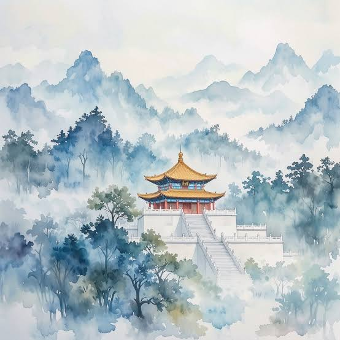
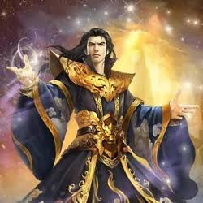

1. El Corazón de Dao como Eje de la Existencia y la Trama
A diferencia de las novelas convencionales de fantasía marcial donde el poder se mide exclusivamente por la acumulación de energía espiritual, la apertura de Palacios del Destino o el prestigio de un linaje sanguíneo, Emperor's Domination plantea desde sus primeros capítulos una tesis filosófica radical: el origen de toda supremacía reside en el Corazón de Dao. Para el autor Yan Bi Xiao Sheng, el talento innato o la sangre de un emperador antiguo son apenas ventajas condicionadas por el entorno, mientras que una voluntad inquebrantable trasciende eras enteras.
A lo largo de la obra, desde la Secta Antigua del Incienso Purificador en los Nueve Mundos hasta las batallas decisivas en el Reino Cielo, Li Qiye demuestra que la claridad interior pesa más que cualquier don heredado. El Corazón de Dao no es una simple técnica marcial ni una escritura secreta, sino la lucidez absoluta sobre la propia identidad, el propósito que sostiene a un ser a través de millones de años de adversidad y la negativa rotunda a doblegarse ante cualquier autoridad —ya sea un clan dominante, un Emperador Inmortal, un Señor del Dao o las leyes mismas del cielo y de la tierra—.
Cuando el espíritu de un individuo alcanza ese grado de firmeza y coherencia, los bloqueos del cultivo, los sellos de épocas pasadas y las presiones psicológicas del enemigo pierden su poder de sometimiento. Por ello, en la novela, el camino de Li Qiye no consiste únicamente en acumular fuerza, sino en despertar o forjar el Corazón de Dao en quienes lo acompañan o lo enfrentan.

2. La Rebelión contra el Mandato del Alto Cielo y las Eras
En la cosmovisión tradicional china, el Tianming o Mandato del Cielo suele asociarse con el orden legítimo y el equilibrio natural. Sin embargo, Emperor's Domination reinterpreta este concepto desde una perspectiva crítica, rebelde y profundamente emancipadora. A lo largo de las distintas eras —desde la Época de la Trinidad y la estructura de los Nueve Mundos hasta el choque entre La Raza y La Gente en los Seis Continentes y la convergencia de coaliciones en el Reino Cielo—, la Voluntad del Cielo y el Alto Cielo operan como mecanismos de control, contención y jerarquía que someten a las criaturas.
- La Trampa de la Conformidad Imperial: Incluso los grandes Emperadores Inmortales que alcanzan la cúspide de su generación deben someterse o fusionarse con la Voluntad del Cielo para obtener su corona y su poder supremo. Desde la óptica filosófica de la novela, esto encierra una paradoja trágica: al convertirse en emperadores, muchos quedan atados al mismo sistema que rige el ciclo de auge y caída de las eras, actuando como piezas dentro de un tablero mayor.
- La Filosofía del Cuervo Oscuro y la Libertad Absoluta: Li Qiye rechaza conformarse con ser un emperador más o un señor de un continente. Durante millones de años como el Cuervo Oscuro, recorre las Doce Tierras de Entierro Prohibidas, las Seis Tierras Ancestrales y zonas extremas no para acumular títulos pasajeros, sino para comprender las reglas ocultas del universo y desarmar las ataduras que oprimen a los seres vivos. Esta postura dialoga con el ideal taoísta de Xiaoyao (la libertad irrestricta del espíritu), llevado a una escala cósmica.
- El Costo de Enfrentar al Orden Superior: La trama deja claro que desafiar a las estructuras dominantes del cosmos —como la Corte Celestial en su momento o el orden del Reino Cielo en la recta final, donde confluyen la Alianza Contra el Cielo, la Alianza Protectora del Mundo y la Alianza Devoradora— exige un sacrificio prolongado. Li Qiye soporta el encierro en el cuerpo del Cuervo Oscuro, la soledad de las eras y el riesgo constante sobre su propia mente, apoyándose en respaldos clave como el Rey Dragón Negro y Min Ren, para sostener un plan que madura a lo largo de millones de años.

3. La Dialéctica entre el Tiempo, la Memoria y la Impermanencia
Uno de los rasgos más distintivos de Emperor's Domination es su manejo del tiempo profundo y de la memoria histórica. Al haber atravesado incontables eras y presenciado la transformación de mundos enteros —desde los Nueve Mundos y el Décimo Mundo hasta los Ocho Desolados, los Seis Continentes, el Nuevo Mundo de los Tres Inmortales y el Reino Cielo—, Li Qiye observa la historia con una perspectiva que ningún cultivador ordinario posee.
En cada etapa del viaje, el protagonista contempla imperios que parecían eternos convertidos en ruinas, sectas gloriosas reducidas a cenizas y genios olvidados bajo capas de polvo y tiempo. Aquí se hace presente la noción de impermanencia: todo lo compuesto y condicionado cambia, se desgasta o se disuelve. Sin embargo, Li Qiye no responde a esa fugacidad con cinismo vacío ni indiferencia, sino afirmando aquello que conserva valor moral y existencial:
- La Ética de la Lealtad, la Gratitud y el Compromiso: Aunque Li Qiye puede ser implacable, sarcástico o severo con quienes actúan con vileza o arrogancia, honra profundamente los vínculos genuinos y las promesas sostenidas en el tiempo. Ya sea protegiendo la senda de figuras que lo acompañaron desde los mundos inferiores —como Li Shuangyan, Chen Baojiao o Bai Jianzhen— o respetando la fidelidad de aliados y discípulos a través de las eras, la lealtad y la gratitud ocupan un lugar central en su conducta.
- La Crítica a la Vanidad del Linaje y la Sangre: A lo largo de la novela, numerosos conflictos nacen de herederos que presumen del linaje de un ancestro o un Emperador Inmortal sin haber cultivado mérito propio. Li Qiye desmonta constantemente esa ilusión: el apellido o la sangre antigua no garantizan grandeza si el corazón es estrecho o cobarde. El verdadero valor se demuestra en la acción, la templanza y la capacidad de sostenerse cuando desaparecen los privilegios heredados.
- La Sabiduría, el Cálculo y el Principio de Wu Wei: En lugar de resolver cada crisis únicamente mediante choques frontales de energía, Li Qiye triunfa porque lee las leyes ocultas de las formaciones, la alquimia, los Frutos del Dao, el Verdadero Yo y las motivaciones humanas. Esta comprensión profunda permite actuar con precisión quirúrgica en el momento exacto, evitando esfuerzos vanos y logrando efectos decisivos allí donde otros fracasan.

4. El Significado de la Inmortalidad: ¿Supervivencia Biológica o Trascendencia del Espíritu?
En las etapas superiores de la obra —especialmente cuando entran en escena existencias antiguas como Anran, Zhan Xian, Zhen Yu y Magu y se libran las batallas definitivas del Reino Cielo—, la novela lleva a su máxima expresión la pregunta sobre el sentido de la inmortalidad. Muchos seres antiguos se aferran desesperadamente a seguir existiendo mediante métodos sombríos, sellos, devoración o aferramiento a restos de eras pasadas, movidos por el miedo a desaparecer.
Para Li Qiye, aferrarse a la existencia a cualquier costo sin libertad ni propósito es una forma degradada de supervivencia. La verdadera grandeza espiritual no consiste simplemente en alargar la duración de un cuerpo o esconderse del paso del tiempo, sino en alcanzar una plenitud de voluntad, conciencia y dominio del propio Dao tal que ni el colapso de las eras ni la presión del cielo puedan doblegar la esencia del ser.

Síntesis de la Filosofía de Li Qiye
A lo largo de más de siete mil capítulos, la travesía de Emperor's Domination entrelaza la rebeldía contra el determinismo celestial, la crítica a las jerarquías vacías de linaje, la lealtad hacia los lazos verdaderos y la búsqueda de una libertad espiritual plena. Desde los mundos inferiores hasta el cierre en el Reino Cielo, el relato convierte el concepto del Dao en una prueba constante de carácter, lucidez y voluntad.
«Frente a mí, no te creas gran cosa. ¿Genios? ¿Y qué? ¿Bellezas sin igual? ¿Y eso qué? Si no me son de utilidad, entonces no pueden alcanzar la cima. A mis ojos, no son diferentes de la gente común. Si bloquean mi camino, ya sean genios o bellezas, ¡los mataré sin piedad!» — Li Qiye mostrando su desdén ante la perspectiva mundana.
Recursos Multimedia de Reflexión Filosófica
Melodía Instrumental de Contemplación del Dao:
🎵 Música Ambiental del Dao:
Referencias bibliográficas de esta sección:
- [1] Yan Bi Xiao Sheng, 2014. Emperor's Domination: Philosophy of the Dao.
- [2] WuxiaWorld Editorial, 2020. The Nine Worlds and Cultivation Systems in Chinese Fantasy.